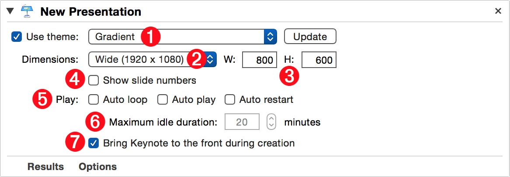
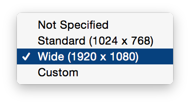
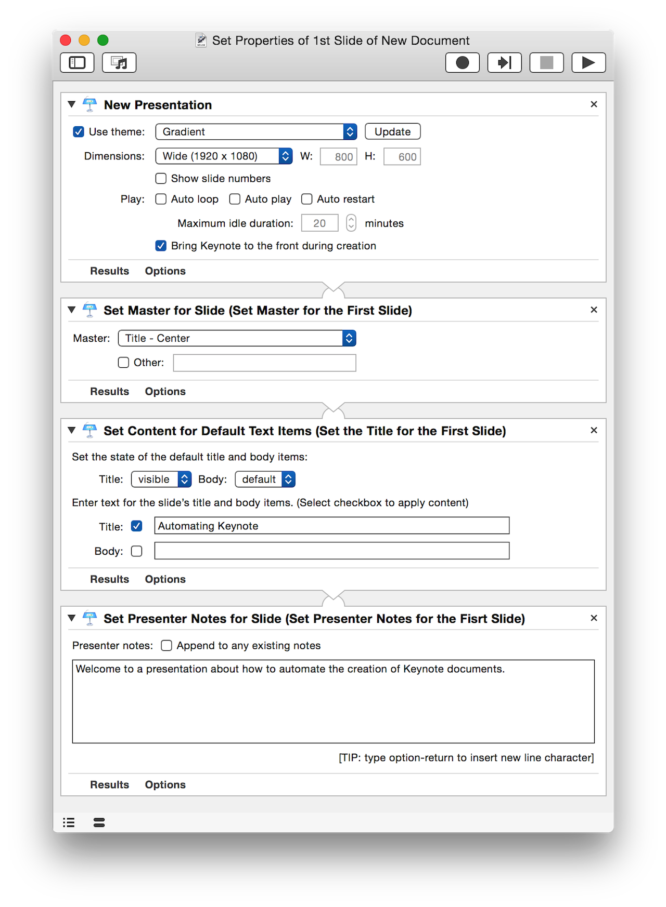

The Document Actions are the heart of the Keynote action collection. They provide the tools necessary for creating, saving, opening, exporting, closing, and presenting Keynote documents. The following pages described in detail their various parameter options and usage for each Automator action in the Keynote actions collection.
You’ll probably begin many of your workflows with this action. It is often the first step in building and constructing powerful presentation documents. The following information explains the action’s controls, behavior, and usage.
The Action Information
| Input: | This action accepts no input |
| Output: | An AppleScript reference to the created document |
| Parameters: | User-settable parameters include:
|
The Action Interface

1 Theme Checkbox and Menu • To specify the theme to use in creating the new document, select this checkbox and choose a theme title from the popup menu. To use the default theme, leave the checkbox unselected. TIP: If a theme used by the current version of Keynote is not in the list, click the “Update” button to display the full list of currently installed themes.
2 Document Size Menu • To create a document using the default size, select the “Not Specified” option from this menu (⬇ see below ) Otherwise, select one of the common sizes or choose “Custom…” and enter the values for the document width and height in the dimensions input fields 3

3 Custom Dimensions Inputs • Enter custom values for the width and height of the new document.
4 Slide Numbers • • Select whether the slide numbers should appear on the individual slides.
5 Playback Properties • Activate any of the document playback properties. NOTE: These properties are especially useful when creating presentations that will be used in kiosks.
6 Maximum Idle Duration • Another kiosk playback property, this value (in minutes) determines how long the presentation should wait before restarting from the beginning. NOTE: This parameter is only available when the “Auto Restart” option has been selected.
7 Activate Keynote • Select this option to make Keynote the frontmost application when the action is run.
When this action is run, a new Keynote document is created. By default, the new document has one slide which is selected. If you want to set important parameters for the first slide, such as slide master or transition, simply follow the “New Presentation” action with one of the actions for manipulating slide properties, and the chosen adjustments will automatically be applied to just the first slide of the newly created presentation.
For example, in the workflow shown below, there’s no need to use the “Get Specified Slide” action to identify the first slide of the newly created document, as the actions will assume that you want to manipulate the current slide of the created document. (⬇ see below )
